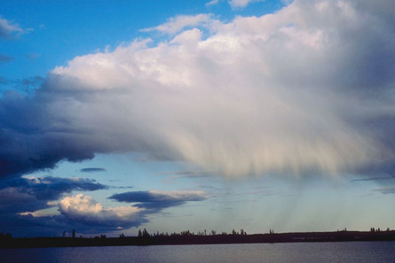

Module 7—Principles of Chemical Equilibrium
Lesson 1—Introduction to Equilibrium
 Get Focused
Get Focused

© 2008 Jupiterimages Corporation
It’s one of the last long weekends of the summer and you are spending the weekend beside a lake. Unfortunately, a rain shower is approaching, and it looks like you will have to take a break from your lakeside activities. Fortunately, there is plenty to do inside the cabin with your friends. Maybe you will get a seat at the card game that started a few hours ago.
It might not seem immediately obvious, but systems at equilibrium are all around you. Can you identify any systems at equilibrium in the situation described in the paragraph above?
To identify a system at equilibrium, you have to know the characteristics that define equilibrium. In this lesson you will begin to investigate equilibrium in chemical systems by learning about the different types of equilibrium that can exist. You will also learn the conditions that define a system at equilibrium.
Consider the following questions as you complete Lesson 1:
- What is equilibrium?
- What is happening in a system that is in equilibrium?
- How can you determine whether a system is open or closed?
 Module 7: Lesson 1 Assignment
Module 7: Lesson 1 Assignment
There is no assignment for this lesson. However, you will begin a table to track the many chemical systems you will investigate and what you learn about their equilibrium. You will add to your table throughout Module 7, and you will use your table to complete the Module Assessment. You will be prompted to begin your table in the Reflect on the Big Picture activity towards the end of this lesson.
The other questions in this lesson are not marked by the teacher; however, you should still answer these questions. The Self-Check, Try This, and other types of questions are placed in this lesson to help you review important information and build key concepts that may be applied in future lessons. You should record the answers to all the questions in the lesson and place those answers in your course folder.
After a discussion with your teacher, you must decide what to do with the questions that are not part of your assignment. For example, you may decide to submit the responses to Try This and other questions that are not marked to your teacher for informal assessment and feedback. Your answers are very important to your teacher. They provide your teacher with information about your learning, and they help your teacher identify where adjustments to your instruction may be necessary.